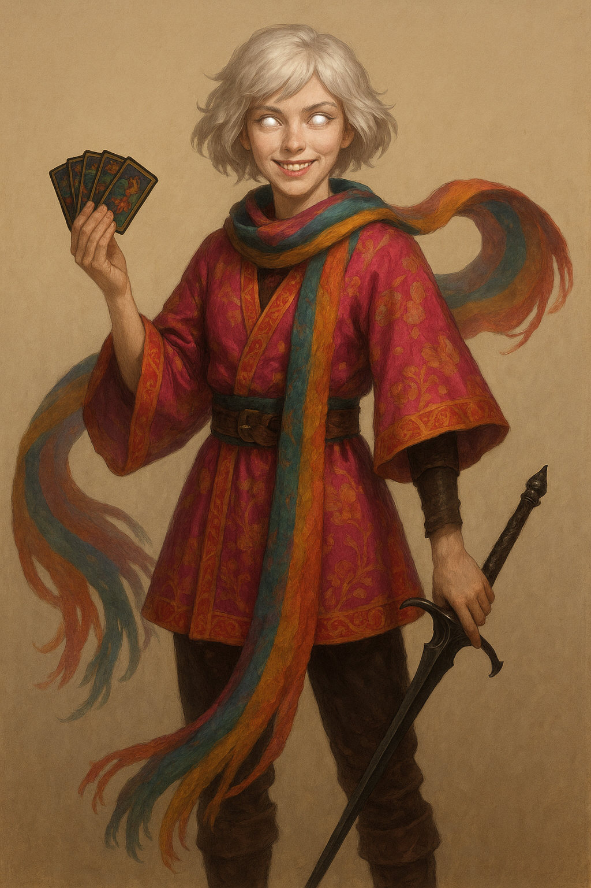

Cephala Fortina¶

“An entire people got lost? Guess I'll have to charge double rate for this one. How much is a people even worth, strictly speaking?”
Character Overview¶
| Class & Level | Warlock (Great Old One) 4 |
| Background | Charlatan |
| Race | Aasimar |
| Alignment | Chaotic Neutral |
| Role | Celestial con‑artist, blaster and party face |
Cephala was once a chronically drifting card‑sharp who relied on her charm, sleight‑of‑hand, and changing aliases to stay a half skip ahead of the law. But one night when she was assailed by a mysterious inquisitor, her dormant celestial blood ignited, unleashing wings of light and a bond to the Tattered Seraph. She became something stranger: half radiant avatar, half street‑wise trickster, all wanderer, on a quest to find her own vanished people that only the Seraph remembers.
Stat Snapshot¶
STR 8 (-1) DEX 14 (+2) CON 14 (+2)
INT 12 (+1) WIS 10 (+0) CHA 18 (+4)
HP 31 AC 15 Speed 30 ft
Proficiency Bonus +2
Spell Save DC 14 Spell Attack +6
Damage Resistances: Radiant, Necrotic
Personality¶
- Impulsive optimism masking deep confusion about her destiny.
- Loves the thrill of a clever con, but feels a pull toward higher purpose.
- Balances radiant heritage with shady instincts, and doesn't feel the tension. It's all the same to her.
- Reads prophetic patterns in a marked deck of cards she always shuffles.
- The most likely party member to somehow end up as queen of Latveria
PDF Character Sheet¶
📄 Download full character sheet
Gameplay Notes¶
Playing Cephala effectively
- Pact of the Tome is not just for spells, it's Cephala's metaphysical notebook for storing clues about her people. You can have it bamf in and out of existence in a nonchalant way, and treat it with a lot less respect than most spellcasters treat their tomes. Remember, Cephala never asked for any of this.
- Tarot readings Cephala makes her living making faux tarot readings. Perhaps sometimes she can find out things that the DM wants to foreshadow. Give the DM the chance to communicate in cryptic ways with the party through your cards by occasionally doing a spread!
- Wanderlust Cephala can't remain in place for any extended period of time. But by this point, she doesn't even know what she's looking for. Wandering is both her big relief and her big sorrow. Perhaps one day she'll find the one thing, or person, that are compelling enough to let her set roots. Play around with what you want this to be, and how you want the mood of Cephala's story arc. Is she more of a dandelion seed waiting to settle? What gifts could she bring once she decides to stay? What does your own version of Cephala value? Community work like running an orphanage? Romance? Or a life of continued adventure?
DM Guidance and plot hooks
- The Tattered Seraph should feel dreamlike, cryptic, even unreliable. A deeper revelation may show that the people it is searching for is tragically much more close than either of them realize. The Tattered Seraph is immensely powerful, but utterly insane and confused. Meanwhile, Cephala may be too impulsive to follow leads consistently. Plan accordingly.
- The inquisitor Morben, witness to her awakening, makes a potent recurring antagonist. But is he truly a villain or a Les Mis "Jauvert" type antagonist?
- Lean into omens via her treasured deck: each draw foreshadows or complicates scenes. The world is your oyster. Go wild.
- The Truth of the Tattered Seraph: Cephala eventually learns the truth: the Tattered Seraph is her people! The result of a magical catastrophe that fused their minds and bodies into one fractured celestial entity. The countless eyes are the scattered perspectives of every soul trapped inside, half-aware each yearning for identity, all struggling and tugging at their communal form like a ten thousand people large marriage with only one blanket. The Seraph knows something happened, but its memory is clouded and unstable. Full awareness could shatter it beyond repair. The Inquisition guards this secret, claiming it’s to prevent the disaster from ever happening again... but whether their motives are pure, political, or both is unclear.
- A cryptic tarot spread predicts doom for someone the party cares about.
- Morben’s witch‑catchers start interrogating people in the party's vicinity.
Last updated: {{ date }}